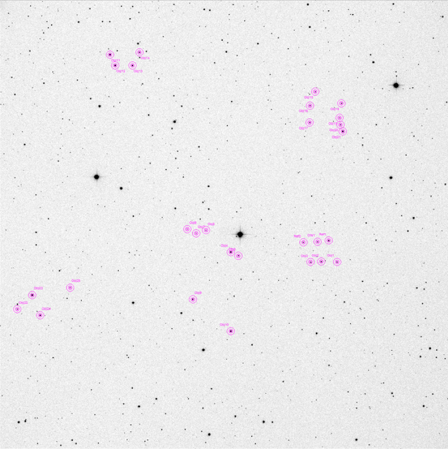
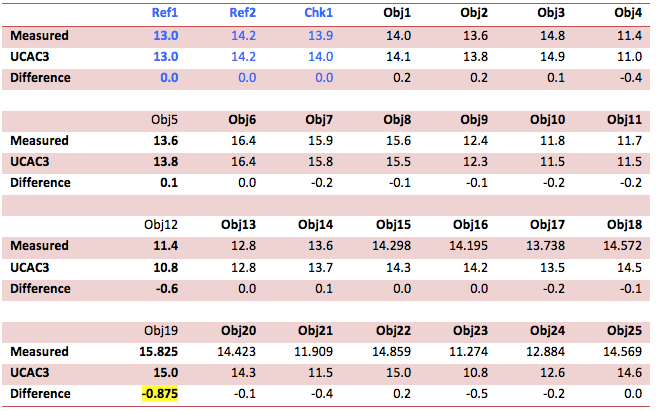
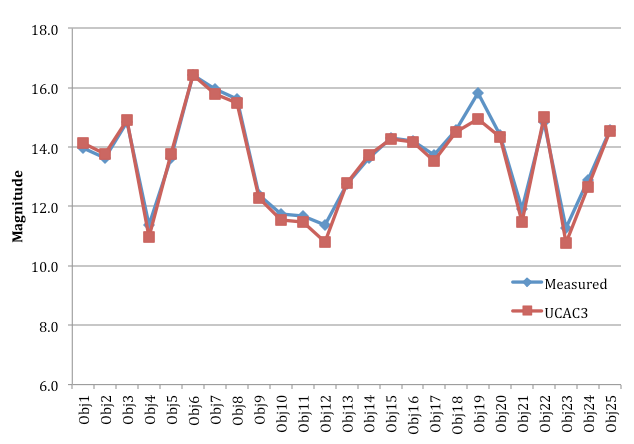

Non photometric catalogues are notoriously unreliable, but are increasingly used by novices amateur astronomers using commercial software such as TheSky and MaxIM DL.
The following basic magnitude 'measurement' test shows results using MaxIM DL's photometry tool, unfiltered images of a random field of stars, and UCAC3.
Image details
RA 10 23 30.0
Dec -24 24 41.0
Telescope Alt: 78°
Air Mass: 1.019
Exposure: 50 seconds
Filter: Luminance
Date: 2013-05-23 11:12 UTC
CCD Temp: -30°
SNR of faintest measured star: 10.968
SNR of brightest measured star: 1064.284
Method
Using the MaxIM DL photometry tool, two reference stars were defined from UCAC3 magnitudes taken from image field information displayed in TheSkyX. One check star was defined.
25 stars were measured. Stars were chosen in groups across the field, within magnitudes defined by SNR and saturation. This provided a sample within a magnitude range of 10.8 to 16.4 (UCAC3 values).

The plot was exported to a CSV file. Magnitudes for each measured star were compared to published UCAC3 values from TheSkyX.

The average difference between measured and UCAC3 values is 0.14 mag.
A maximum difference 0.875 mag was noted for object 19. This was a significant ‘outlier’ compared to the other objects.

Findings
Magnitudes seem to correlate well over the range, despite a relatively small sample and the fact that magnitudes in UCAC are unreliable (UCAC is not a photometric catalogue). The relatively large deviation in at least one outlier suggests a considerable likelihood for error in small samples when using this method.
MaxIM DL appears to have a reliable function for ascertaining instrumental magnitudes based upon a defined reference.